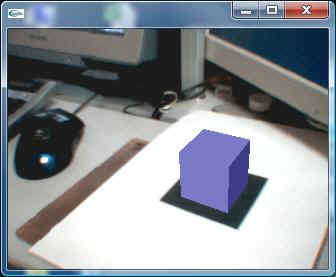
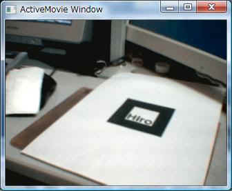

ARToolKit関係
◎使い方
ARToolKitLibの基本的な使い方をサンプルプログラムを元に説明します。
詳細は添付サンプルのSample_Simpleを参照してください。
Sample_SimpleはARToolKit付属サンプルのsimpleを移植したプログラムです。
基本構造は元と同じですが、VB用に若干改造し、日本語のコメントを追加してあります。
このサンプルはカメラ映像をウィンドウに表示し、
マーカー画像を見つけた場合、その位置に箱を描画します。
マーカーはARToolKitのpatternsフォルダ内にある「pattHiro.pdf」です。
このPDFファイルを印刷してカメラで撮影して下さい。


左：サンプルsample_simpleの画面 右：ただのカメラの画像(GraphEditで撮影)
カメラで 四角のHiro を撮影すると、その位置に青色のボックスが描画されます。
カメラを動かすマーカーの位置/角度に合わせてボックスも変化します。
○参照設定
'「ARToolKitLib.dll」と「OpenGLLib.dll」を参照設定してください。
Imports
ManagedARToolKit
Imports
OpenGLLib
|
まず、「参照の追加」で「ARToolKitLib.dll」と「OpenGLLib.dll」を追加します。
マーカー検出だけならARToolKitLib.dllだけで可能ですが、
検出箇所にボックスを描画するためにOpenGLLibが必要となります。
「ARToolKitLib.dll」と「OpenGLLib.dll」を参照設定することで
ManagedARToolKitとOpenGLLibが使用できるようになります。
ARToolKitでカメラで撮影したマーカーの上になにか物体を描くには
このサンプルは下記のような構造となってます。
GLUTの初期化
↓
カメラの準備
↓
カメラパラメタの読込/設定
↓
マーカーの登録
↓
表示ウィンドウの準備
↓
キャプチャ開始
↓
メインループ
１フレーム読み込み
↓
マーカー検索
↓
マーカー位置決定
↓
描画
○GLUTの初期化
'GLUT初期化処理（実は不要）
Dim argc As
Integer = 1
Dim argv() As
String = {My.Application.Info.ProductName}
glutInit(argc, argv)
|
GLUTを初期化します。が、この処理は不要だったりします。
（引数に深い意味もありません。）
○カメラの準備
'カメラ設定情報が格納されているファイル名
Dim vconf As
String =
GetARToolKitInstallDirectory() + "\bin\data\WDM_camera_flipV.xml"
|
'open the video path
'カメラの起動
If
arVideoOpen(vconf) < 0 Then
End
End If
|
カメラの属性を指定して、カメラを初期化します。
引数として入力ソースの情報が記述されているXMLファイルを指定します。
関数GetARToolKitInstallDirectory()は、
ARToolKitがインストールされている(であろう)フォルダを返します。
このサンプルではARToolKitに付属している設定ファイル"WDM_camera_flipV.xml"を指定しています。
カメラ情報XMLファイルの形式については、
DVSLフォルダ下にDsVideoLib.xsdというスキーマファイルがありますので
詳細についてはそちらを参照してください。
例）カメラ入力：上下反転、サイズ等はダイアログで選択（WDM_camera_flipV.xmlと同じ）
<?xml version="1.0" encoding="UTF-8"?>
<dsvl_input>
<camera show_format_dialog="true">
<pixel_format>
<RGB32 flip_h="false" flip_v="true"/>
</pixel_format>
</camera>
</dsvl_input>
|
例）カメラ入力：上下反転、サイズは640x480でダイアログ表示なし
<?xml version="1.0" encoding="UTF-8"?>
<dsvl_input>
<camera frame_width="640" frame_height="480">
<pixel_format>
<RGB32 flip_h="false" flip_v="true"/>
</pixel_format>
</camera>
</dsvl_input>
|
○カメラパラメタの読込/設定
Dim xsize,
ysize As Integer
'画像サイズ
Dim thresh As
Integer = 100 'マーカー認識時の二値化しきい値
Dim count As
Integer = 0 'フレーム数
'カメラパラメタが格納されているファイル名
Dim
cparam_name As
String =
GetARToolKitInstallDirectory() + "\bin\Data\camera_para.dat"
Dim cparam As
New ARParam 'カメラパラメタ
|
'find the size of the window
'画像サイズを取得
If
arVideoInqSize(xsize, ysize) < 0 Then
End
End If
Console.WriteLine("Image
size (x,y) = ({0},{1})", xsize, ysize)
'set the initial camera parameters
'カメラパラメタを読み込む
If
arParamLoad(cparam_name, 1, wparam) < 0 Then
Console.WriteLine("Camera
parameter load error !!")
End
End If
arParamChangeSize(wparam, xsize, ysize, cparam) '読み込んだカメラパラメタを画像サイズに合わせて調整
arInitCparam(cparam) 'カメラを初期化
Console.WriteLine("***
Camera Parameter ***")
arParamDisp(cparam) 'カメラパラメタの表示
|
カメラパラメタとは、カメラのレンズ特製などから導き出される係数で
キャリブレーションを行うことでカメラ毎に用意します。
が、ARToolKitに添付されているサンプルデータでもそれなりの結果が出ます。
まず今回使う画像のサイズをarVideoInqSizeで取得し
ベースとなるカメラパラメタをarParamLoadで読み込み
arParamChangeSizeで画像サイズに合わせて
読み込んだカメラパラメタを調整します。
最後に調整が済んだカメラパラメタをarInitCparamで設定することにより、
以後の計算で使用されるようになります。
なおarParamDispは何も出力しません。（手抜き～）
○マーカー登録
'マーカーパターンの読み込み/登録
patt_id = arLoadPatt(patt_name)
If patt_id
< 0 Then
Console.WriteLine("pattern
load error !!") '
End
End If
|
マーカーのパターンはarLoadPatt()で読み込みます。
戻り値としてパターンを認識するIDが返されます。
このIDは検索結果から目的のマーカーを探すために必要になります。
○表示ウィンドウの準備
'open the graphics window
'描画ウィンドウの準備
argInit(cparam, 1.0, 0, 0, 0, 0)
|
argInitで画像サイズにあったウィンドウなどが用意されます。
○キャプチャ開始
'キャプチャ開始
arVideoCapStart()
|
arVideoCapStartでキャプチャを開始します。
○メインループ開始
'メインループ開始(復帰なし)
argMainLoop(Nothing,
keyEvent_Ptr, mainLoop_Ptr)
|
argMainLoopではマウスイベント用関数、キーイベント用関数、メイン更新関数を指定します。
各関数のデリゲートを指定してください。（不要なところはNothingが指定できます。）
argMainLoopはGLUTのglMainLoopを使っています。
OpenGLのページでも触れてますが、
argMainLoop(glMainLoop)を呼び出すと戻ってきません。
使わない方法も面倒ですが一応ありますので、
アプリにするならそちらの方がいいかと思います。
argMainLoopを使わない方法はサンプルの「Sample_NotUseArgMainLoop」を参照してください。
○メインループ：１フレーム読み込み
'main loop
'メインループ処理(argMainLoopから繰り返し呼び出される）
Sub mainLoop()
Dim
dataPtr As
ARUPointer 'イメージデータのアドレス
Dim
marker_info As
ARMarkerInfo = Nothing
'発見したマーカー情報
Dim
marker_num As Integer
'発見したマーカーの数
Dim
j, k As Integer
'grab
a vide frame
'カメラから１フレーム読み込み
dataPtr =
arVideoGetImage()
If
dataPtr.IsNull Then
arUtilSleep(2)
'読み込み失敗時は2ms待機し、次のフレームへ
Return
End If
If count = 0 Then
arUtilTimerReset() 'フレームレート計算用のタイマーをリセット
count += 1 'フレーム数加算
argDrawMode2D() '２Ｄ描画モードへ
argDispImage(dataPtr,
0, 0) '読み込んだ画像を描画
|
arVideoGetImageにてカメラから１フレームを読み込みます。
失敗した場合（開始直後などまだカメラに画像が読み込まれてない場合など）はNullが返されるので
その場合は少しだけ待って、再度読み込みを試します。
countは終了時にフレームレートを表示するためのフレームカウンタです。
サンプルではargDispImageで読み込んだ画像を表示しています。
○メインループ：マーカー検索
'detect the markers in the video
frame
'画像からマーカーを検索
If
arDetectMarker(dataPtr, thresh, marker_info, marker_num) < 0 Then
cleanup() '検索に失敗した場合、終了
End
End If
arVideoCapNext() '次のフレームの準備
|
arDetectMarkerで画像中のマーカーを検索します。
検索した結果は配列としてメモリ内に格納され、
marker_infoに先頭(アドレス)が、marker_numに個数が返されます。
arVideoCapNextを呼び出すと次のフレームの読み込みに着手しますが、
描画が検索が終わった後に呼び出す必要があります。
○メインループ：マーカー位置決定
'check for object visibility
'発見されたマーカー情報の中で、最もスコアが大きい位置を選出
Dim
marker_info_arr() As
ARMarkerInfo = marker_info.GetArray(marker_num)
k = -1
For j = 0 To
marker_num - 1
If
patt_id = marker_info_arr(j).id Then
If
k = -1 Then
k = j '初見のマーカー情報を仮選択
ElseIf
marker_info_arr(k).cf < marker_info_arr(j).cf Then
k = j 'よりスコアの大きいマーカー情報を選択
End
If
End
If
Next
If k = -1 Then
argSwapBuffers() '見つからなかった場合、何もしないで次のフレームへ
Return
End If
|
まず、arDetectMarkerで取得した先頭マーカー情報から
marker_num個数分だけマーカー情報を配列に取り出します。（marker_infoのGetArrayメソッド）
取り出したARMarkerInfo配列の中から、
ターゲットのマーカーパターン(id)で最もスコア(cf)が高い情報を選出します。
ターゲットマーカーの情報がなければ検出できなかった事を意味します。
○メインループ：描画
'get the transformation between the
marker and the real camera
'マーカーの位置情報(2D位置)から実際の位置情報(3D位置)へ変換する行列(マーカー変換行列)を取得
arGetTransMat(marker_info_arr(k), patt_center,
patt_width, patt_trans)
draw() 'マーカー上にボックスを描画
argSwapBuffers() 'バッファ切り替えを行い、画面を更新
|
マーカーが見つかった場合、その位置にボックスを描画します。
描画はOpenGL(GLUT)のglutSolidCubeでおこなってます。
OpenGLで描画するときに使用する変換行列は、
まずarGetTransMatで選出したマーカー情報から３×４の行列を取得し、
その行列をargConvGlparaでGL用の４×４行列に変換して取得します。
（この辺がARToolKitのキモというか、私的に一番面白い所ですね。）
以上がもっともシンプルなサンプルの説明になります。
◎サンプル
ARSampleで始まるサンプルはARToolKit付属サンプルを移植したものです。
○ARSample_Simple
ARToolKit付属サンプルsimpleを移植したサンプルです。
カメラ映像内のマーカーの上にボックスを描画します。
○ARSample_MultiTest
ARToolKit付属サンプルmultiTestを移植したサンプルです。
６個のマーカーを認識し、それぞれの上にボックスを描画します。
○Sample_DLLCheck
ARToolKitLib.dllが呼び出せるかどうかを確認するためのサンプルです。
ARToolKitのバージョンとインストールパスを表示します。
○Sample_NotUseArgMainLoop
argMainLoopを使用しないでsimpleと同等の動作を実現するサンプルです。
画像取り込みにOpenCV、検索にARToolKit、描画にOpenGLを使用しています。

ボックスじゃなくてティーポットにしてみました。
上に戻る